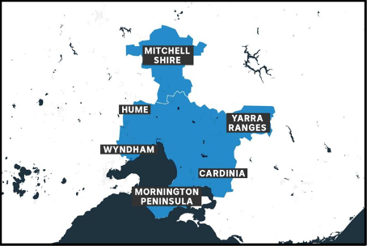

Alpha Builders
Assignment Part 1
The "What" Section
Project Name: vicovid19 Data
The Alpha Builders would like to construct a website that contains COVID-19 Data from the following areas; Mitchell Shire, Hume, Yarra Ranges, Wyndham, Cardinia and the Morning Peninsula. Image taken from https://www.abc.net.au/news/2020-07-07/metropolitan-melbourne-suburbs-back-in-coronavirus-lockdown/12431564

These areas are in Victoria and the idea for the website is to have very quick, user friendly and informative information for people to help minimise COVID-19 for themselves and others around them in their local community. The website will be designed as a tool for people to use as a resource to get current data of COVID-19. Daily data from Melbourne and surrounding suburbs can be shown. COVID-19 new cases, current cases, deaths, recoveries and people in Intensive Care.
We can get data from this website (either dynamically or we can construct our own database for this exercise). https://www.covid19data.com.au/
This website has national and Victorian categories.
We can compare data on a national and state level looking at:
- Confirmed cases today
- Confirmed cases yesterday
- Recoveries
- Deaths
This information can be captured in several ways. We can have a small summary of data available at the top of the screen or window. This information can be shown in graph form and this would either be on its own page of corresponding data or be placed further down on the home page. This can evolve through more developing the content of the site as a group. Here is a link on embedding interactive COVID-19 maps, but may not be as local as the website requires.